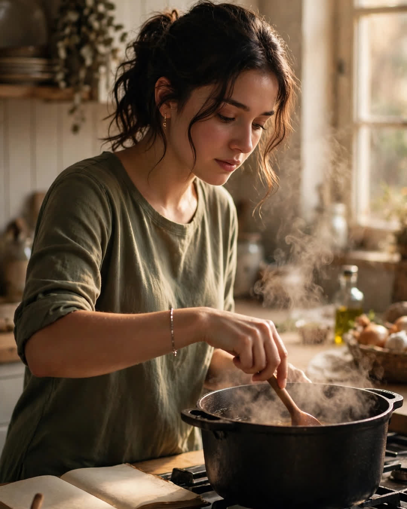

The Recipe She Never Wrote Down
A Clipp Kaili original story

For twenty years I begged my mother to write down her chicken and dumplings, and for twenty years she laughed and said, "You just know when it's right."
She never measured anything. A handful of flour. Butter the size of an egg — whose egg, she never said. Salt until it "sounds right" when it hit the broth. I stood beside her a hundred times with a notebook that stayed empty, because watching her cook was like watching someone speak a language they did not know they knew.
When she passed last winter, the whole family agreed on one thing at the funeral lunch: nobody would ever taste that dish again.
I tried anyway. I tried for three months. I bought cookbooks. I watched videos. I made dumplings that came out like wet stones and broth that tasted like dishwater with ambition. My brother took one bite of my fourth attempt and said, gently, "Mom would be proud you tried," which in our family is what you say when there is nothing kind to say about the food.
On the fifth try, my aunt came over. She stood in my kitchen doorway watching me fight with a pot that was too small and a spoon that was too thin, and she said, "You're using the wrong pan, baby."
Mom's pan was still at her house, waiting to be boxed up — a heavy black cast-iron pot, older than me, with one handle wrapped in electrical tape. I had avoided it because going through her kitchen felt like going through her pockets. That Sunday I went and got it. I washed it. I put it on my stove, and it fit the burner like it had been waiting.
I made the same recipe I had failed at four times. Same flour. Same butter. Same hands.
It tasted like hers.
Not close. Hers. The broth thickened the way hers did, the dumplings held, the whole kitchen filled with that smell I thought I had lost forever — Sunday afternoons, her humming, the radio low.
I called my aunt crying so hard she thought someone had died again. "It was the pan," I said. "All this time, it was the pan."
"Of course it was," she said. "That pan has forty years of dinners in it. Your mama seasoned that pot with every meal she ever made for people she loved. You can't write that down, honey. You just have to keep cooking in it."
Here is what I understand now that I did not understand when she was alive: my mother was not hiding her recipe from me. She was trying to tell me there was not one. The secret was never a spice she kept in a tin with no label. The secret was showing up at the same stove, in the same pan, for the same people, year after year, until the food itself learned how to love them back.
I cook in her pan every Sunday now. My daughter stands beside me with an empty notebook, begging me to write it down.
I laugh, just like my mother did.
"Put the notebook away," I tell her. "Stand here. Watch my hands. Someday this pan is yours — and you'll know when it's right."
This story is a work of fiction, written to touch hearts and bring families closer.
← Back to all stories